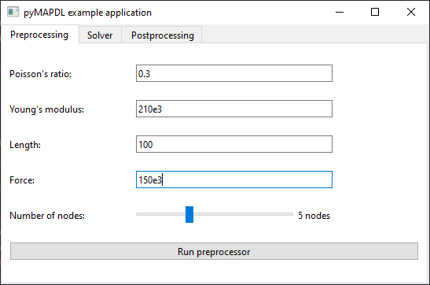

Create a GUI app in Python with PySide6#
This example shows how to create a graphical user interface (GUI) app in Python that uses PyMAPDL to compute the deflection of a square beam.
Simulation setup#
The following script launches a graphical app using PySide6:
import sys
from PySide6 import QtWidgets
from PySide6.QtCore import Qt
from PySide6.QtWidgets import (
QApplication,
QGridLayout,
QLabel,
QLineEdit,
QMainWindow,
QPushButton,
QSlider,
QVBoxLayout,
QWidget,
)
class MainWindow(QMainWindow):
def __init__(self, parent=None) -> None:
super().__init__(parent)
self._setup_ui()
def _setup_ui(self) -> None:
# General settings for the window
self.setWindowTitle("PyMAPDL example application")
self.resize(1000, 500)
self._widget = QWidget()
self._layout = QVBoxLayout()
self._layout.setContentsMargins(0, 0, 0, 0)
# Create the tabs
self._tab_widget = QtWidgets.QTabWidget()
self._tab_preprocessing = QtWidgets.QWidget()
self._tab_widget.addTab(self._tab_preprocessing, "Preprocessing")
self._setup_tab_preprocessing()
self._tab_solver = QtWidgets.QWidget()
self._tab_widget.addTab(self._tab_solver, "Solver")
self._setup_tab_solver()
self._tab_postprocessing = QtWidgets.QWidget()
self._tab_widget.addTab(self._tab_postprocessing, "Postprocessing")
self._setup_tab_postprocessing()
self._layout.addWidget(self._tab_widget)
self._widget.setLayout(self._layout)
self.setCentralWidget(self._widget)
def _setup_tab_preprocessing(self) -> None:
container_layout = QGridLayout()
max_qlineedit_width = 250
self._tab_preprocessing.setLayout(container_layout)
# Poisson's ration input
poisson_ratio_label = QLabel("Poisson's ratio: ")
container_layout.addWidget(poisson_ratio_label, 0, 0)
self._poisson_ratio_input = QLineEdit()
self._poisson_ratio_input.setPlaceholderText("Poisson's ratio (PRXY)")
self._poisson_ratio_input.setText("0.3")
self._poisson_ratio_input.setMaximumWidth(max_qlineedit_width)
# Young modulus input
young_modulus_label = QLabel("Young's modulus: ")
container_layout.addWidget(young_modulus_label, 1, 0)
self._young_modulus_input = QLineEdit()
self._young_modulus_input.setPlaceholderText(
"Young's modulus in the x direction"
)
self._young_modulus_input.setText("210e3")
self._young_modulus_input.setMaximumWidth(max_qlineedit_width)
# beam length input
length_label = QLabel("Length: ")
container_layout.addWidget(length_label, 2, 0)
self._length_input = QLineEdit()
self._length_input.setPlaceholderText("Length")
self._length_input.setMaximumWidth(max_qlineedit_width)
# Input for the force exerced on the beam
force_label = QLabel("Force: ")
container_layout.addWidget(force_label, 3, 0)
self._force_input = QLineEdit()
self._force_input.setPlaceholderText("Load force")
self._force_input.setMaximumWidth(max_qlineedit_width)
# Slider for the number of nodes (between 3 and 9)
number_of_nodes_label = QLabel("Number of nodes: ")
container_layout.addWidget(number_of_nodes_label, 4, 0)
self._number_of_nodes_input = QSlider(orientation=Qt.Orientation.Horizontal)
self._number_of_nodes_input.setMinimum(3)
self._number_of_nodes_input.setMaximum(9)
self._number_of_nodes_input.setValue(5)
self._number_of_nodes_input.setSingleStep(2)
self._number_of_nodes_input.setPageStep(2)
self._number_of_nodes_input.setMaximumWidth(max_qlineedit_width - 50)
self._number_of_node_label = QLabel(
f"{self._number_of_nodes_input.value()} nodes"
)
self._number_of_nodes_input.valueChanged.connect(
lambda _: self._number_of_node_label.setText(
f"{self._number_of_nodes_input.value()} nodes"
)
)
# Button to run the preprocessor
self._run_preprocessor_button = QPushButton(text="Run preprocessor")
container_layout.addWidget(self._poisson_ratio_input, 0, 1, 1, 2)
container_layout.addWidget(self._young_modulus_input, 1, 1, 1, 2)
container_layout.addWidget(self._length_input, 2, 1, 1, 2)
container_layout.addWidget(self._force_input, 3, 1, 1, 2)
container_layout.addWidget(self._number_of_nodes_input, 4, 1, 1, 1)
container_layout.addWidget(self._number_of_node_label, 4, 2, 1, 1)
container_layout.addWidget(self._run_preprocessor_button, 5, 0, 1, 3)
def _setup_tab_solver(self) -> None:
container_layout = QGridLayout()
self._tab_solver.setLayout(container_layout)
# Button to run the solver
self._solve_button = QPushButton(text="Solve")
container_layout.addWidget(self._solve_button)
def _setup_tab_postprocessing(self) -> None:
container_layout = QtWidgets.QVBoxLayout()
self._tab_postprocessing.setLayout(container_layout)
self._deflection_label = QLabel("Deflection: ")
container_layout.addWidget(self._deflection_label)
if __name__ == "__main__":
app = QApplication(sys.argv)
window = MainWindow()
window.show()
sys.exit(app.exec())
The Preprocessing tab contains input fields for Poisson’s ratio, Young modulus, beam length, and a number of simulation nodes.
Add a PyVista plotting frame in the window#
Start by importing the QtInteractor
class from the pyvistaqt package and the MapdlTheme
class from the ansys-mapdl-core package:
from pyvistaqt import QtInteractor
from ansys.mapdl.core import MapdlTheme
Then, add a plotter on the first tab:
def _setup_tab_preprocessing(self) -> None:
...
container_layout.addWidget(self._run_preprocessor_button, 5, 0, 1, 3)
# PyVista frame in the window
self._preprocessing_plotter = QtInteractor(theme=MapdlTheme())
container_layout.addWidget(self._preprocessing_plotter, 0, 4, 6, 50)
Add another plotter on the second tab:
def _setup_tab_postprocessing(self) -> None:
container_layout = QtWidgets.QVBoxLayout()
self._tab_postprocessing.setLayout(container_layout)
self._postprocessing_plotter = QtInteractor(theme=MapdlTheme())
container_layout.addWidget(self._postprocessing_plotter)
self._deflection_label = QLabel("Deflection: ")
container_layout.addWidget(self._deflection_label)
Finally, make sure to correctly close the VTK widgets when closing the app:
def closeEvent(self, event) -> None:
self._preprocessing_plotter.close()
self._postprocessing_plotter.close()
event.accept() # let the window close
Launch an MAPDL instance in your window#
Add an attribute to your MainWindow for the MAPDL instance and import the launch_mapdl package.
# LIABILITY, WHETHER IN AN ACTION OF CONTRACT, TORT OR OTHERWISE, ARISING FROM,
import sys
from PySide6 import QtWidgets
from PySide6.QtCore import Qt
self._mapdl.slashsolu()
self._mapdl.solve()
self._mapdl.finish()
# run postprocessing
self._mapdl.post1()
Develop the logic#
Connect each button to a function that contains the logic:
def _setup_tab_preprocessing(self) -> None:
...
# Button to run the preprocessor
self._run_preprocessor_button = QPushButton(text="Run preprocessor")
self._run_preprocessor_button.clicked.connect(self._run_preprocessor)
...
def _setup_tab_solver(self) -> None:
container_layout = QGridLayout()
self._tab_solver.setLayout(container_layout)
self._solve_button = QPushButton(text="Solve")
self._solve_button.clicked.connect(self._run_solver)
container_layout.addWidget(self._solve_button)
You can now write the related functions:
container_layout.addWidget(self._poisson_ratio_input, 0, 1, 1, 2)
container_layout.addWidget(self._young_modulus_input, 1, 1, 1, 2)
container_layout.addWidget(self._length_input, 2, 1, 1, 2)
container_layout.addWidget(self._force_input, 3, 1, 1, 2)
container_layout.addWidget(self._number_of_nodes_input, 4, 1, 1, 1)
container_layout.addWidget(self._number_of_node_label, 4, 2, 1, 1)
container_layout.addWidget(self._run_preprocessor_button, 5, 0, 1, 3)
# PyVista frame in the window
self._preprocessing_plotter = QtInteractor(theme=MapdlTheme())
container_layout.addWidget(self._preprocessing_plotter, 0, 4, 6, 50)
def _setup_tab_solver(self) -> None:
container_layout = QGridLayout()
self._tab_solver.setLayout(container_layout)
# Button to run the solver
self._solve_button = QPushButton(text="Solve")
self._solve_button.clicked.connect(self._run_solver)
container_layout.addWidget(self._solve_button)
def _setup_tab_postprocessing(self) -> None:
container_layout = QtWidgets.QVBoxLayout()
self._tab_postprocessing.setLayout(container_layout)
# Add a PyVista frame
self._postprocessing_plotter = QtInteractor(theme=MapdlTheme())
container_layout.addWidget(self._postprocessing_plotter)
self._deflection_label = QLabel("Deflection: ")
container_layout.addWidget(self._deflection_label)
def _run_preprocessor(self) -> None:
try:
poisson_ratio = float(self._poisson_ratio_input.text())
young_modulus = float(self._young_modulus_input.text())
length = float(self._length_input.text())
force = float(self._force_input.text())
except Exception:
msg_box = QMessageBox()
msg_box.setText("Expecting a number")
msg_box.exec()
return
poisson_ratio = float(self._poisson_ratio_input.text())
young_modulus = float(self._young_modulus_input.text())
length = float(self._length_input.text())
force = float(self._force_input.text())
self._mapdl.clear()
self._mapdl.verify()
self._mapdl.prep7()
self._mapdl.antype("STATIC")
# create element type
self._mapdl.et(1, "BEAM188")
# Create material
self._mapdl.mp("PRXY", 1, poisson_ratio)
self._mapdl.mp("EX", 1, young_modulus)
self._mapdl.sectype(1, "BEAM", "RECT")
self._mapdl.secdata("10", "10")
self._number_of_nodes = self._number_of_nodes_input.value()
# Create the nodes
for node_num in range(1, self._number_of_nodes + 1):
self._mapdl.n(
node_num, (node_num - 1) * length / (self._number_of_nodes - 1), 0, 0
)
# Create the elements
for elem_num in range(1, self._number_of_nodes):
self._mapdl.e(elem_num, elem_num + 1)
# Fix beam ends
self._mapdl.d(1, lab="ALL")
self._mapdl.d(self._number_of_nodes, lab="ALL")
# Apply the force to the node in the middle
self._mapdl.f(self._number_of_nodes // 2 + 1, lab="FY", value=force)
# Get the pv.Plotter object from mapdl.eplot function
# to plot in the window
preprocessing_plotter = self._mapdl.eplot(
show_node_numbering=True, show_edges=True, cpos="xy", return_plotter=True
)
self._preprocessing_plotter.GetRenderWindow().AddRenderer(
Additional files#
The example files can be downloaded using these links:
Original
gui_app.pyscript